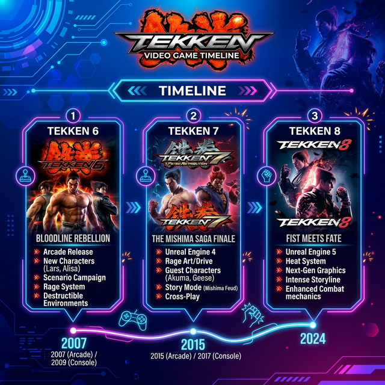

Game Appearances

Game
Year
Role
Tekken 6: Bloodline Rebellion
2009
Debut — Playable Character
Tekken Tag Tournament 2
2011
Playable Character
Tekken Revolution
2013
Playable Character
Tekken 7
2015
Playable Character
Tekken 8
2024
Playable Character
Fun Facts
Name Meaning:
"Alisa" is the Russian form of "Alice," reflecting her Russian origin.
Modeled After:
She was designed in the image of Dr. Bosconovitch's late daughter.
Hidden Weapons:
Her body houses chainsaws, rocket boosters, explosive head, and detachable fists.
Fan Favorite:
Alisa is consistently ranked among the most popular Tekken characters worldwide.
Personality:
Despite being a robot, she displays genuine emotions like kindness, curiosity, and loyalty.
Cross-Over:
Alisa has appeared in other games such as
Street Fighter X Tekken
and
Project X Zone
.